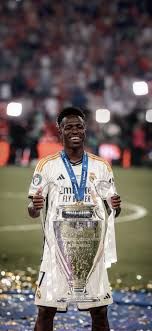

основна інформація
Кіліан Мбаппе — відомий французький футболіст. Він славиться своєю швидкістю, технікою та вмінням забивати голи. Мбаппе є однією з найбільших зірок сучасного футболу.
Кіліан Мбаппе — один із найталановитіших і найвідоміших футболістів сучасності. Він народився у Франції та з юного віку привернув увагу футбольного світу. Мбаппе відомий своєю неймовірною швидкістю, дриблінгом і точними ударами. Він став чемпіоном світу у складі збірної Франції у 2018 році. Кіліан неодноразово отримував індивідуальні нагороди за свої виступи. Він є лідером та капітаном національної збірної Франції. Мбаппе регулярно забиває важливі голи у вирішальних матчах. Його стиль гри поєднує силу, техніку та футбольний інтелект. За межами поля Мбаппе відомий своєю скромністю та благодійною діяльністю. Багато експертів вважають його одним із найкращих гравців свого покоління.
друзі
- Вінісіус Жуніор — бразильський вінгер мадридського «Реала», відомий своєю вибуховою швидкістю, дриблінгом і вмінням вирішувати епізоди один в один. Він часто грає на лівому фланзі, постійно загострює гру, створює моменти партнерам і сам багато забиває у важливих матчах. Вінісіус вирізняється емоційністю та характером, а з роками помітно додав у стабільності й реалізації.
 -
Джуд Беллінгем — англійський півзахисник «Реала», який попри молодий вік є лідером у центрі поля. Він універсальний: може діяти як box-to-box, атакувальний хавбек і навіть завершувати атаки, регулярно забиваючи голи. Беллінгем відзначається футбольним інтелектом, фізичною міццю та зрілою грою, що робить його одним із найперспективніших футболістів свого покоління.